影像調整與驗證測試圖表介紹
使用影像圖表（如Gray chart、Q-13、ColorChecker）進行影像處理與校正，是為了建立客觀的色彩與亮度標準，消除環境光與硬體設備造成的失真。

為什麼需要影像圖表？
在影像系統（如智慧型手機、車載鏡頭、安防監控、醫療內視鏡）的開發與優化過程中，「影像圖表（Image Quality Test Charts）」就像是影像工程師的「量尺」與「砝碼」。如果沒有影像圖表，影像調整（Tuning）與標準確認將完全失去依據。
使用它的核心原因可以總結為以下四大點：
- 圖表的作用 ：影像圖表上的色塊、線條和灰階，都經過極其精密的物理與光學定量設計。
- 數據化呈現 ：影透過拍攝圖表並由軟體（如 Imatest）分析，能將主觀的「清晰」變成 MTF/解像力數值；將「鮮豔」變成 ΔE 色差值；將「雜訊」變成 信噪比（SNR）分貝數。有了客觀數據，團隊才能訂定明確的優化目標（例如：目標是將色差 ΔE 降到 2 以內）。
- 圖表的作用：圖表（不論是反射式還是透射式菲林）的反射率、透光率和顏色坐標都是恆定不變的。
- 確保實驗唯一性：在標準實驗室（光源、亮度固定）下拍攝同一張圖表，可以確保「每一次拍攝的輸入源完全一模一樣」。此時影像產生的任何變化，都百分之百是由工程師調整的軟體演算法（如白平衡、調色盤 3D-LUT、降噪強度）所引起的。
- 極限測試 ：像 36 階動態範圍測試卡（36-Patch Chart）可以在一個畫面上呈現跨越 100dB 以上的明暗對比，這種極端環境是高階影像晶片（ISP）的試金石，能逼出感光元件的真實極限。
- 橫向對比（Benchmarking） ：當公司要評估自家新手機與競爭對手手機的畫質優劣，或者要測試不同感光元件（Sensor）的硬體效能時，讓所有設備在同一個標準環境下拍攝同一張圖表，才能得到公平、可信的對比結果。
- 產線品管（QC） ：工廠產線上無法搬一幅畫或放一盆花讓機器去對焦測試。
- 自動化辨識 ：產線透過架設標準的測試圖表（如 SFR 測試卡），配合自動化檢測系統，可以在 1~2 秒內快速判定這台剛組裝好的鏡頭有沒有失焦（Out of focus）、有沒有組裝偏心（Tilt/Decenter）、或者發色有沒有異常。只要數據不達標，立刻打為不良品，這就是影像標準確認（Validation）的最後一道防線。。
1. 將「主觀感受」轉化為「客觀數據」 ：
人眼對影像的感覺是極度主觀且容易疲勞的。例如，兩個人觀看同一張人像，對於「膚色夠不夠紅潤」或「畫面夠不夠清晰」往往會有不同的標準。
2. 提供「標準的輸入源」，排除環境變數：
影像調整的核心是「控制變因」。如果今天拿相機去拍窗外的風景來調整畫面，陽光的角度、雲層的厚度、甚至風吹動樹葉，都會隨時改變畫面的亮度和色彩，工程師根本無法判斷影像的改變是因為調校了參數，還是因為外在環境變了。
3. 提供用於「極限測試」與跨平台的「橫向對比」 ：
普通的自然風景很難在同一個畫面中同時包含「極致的亮點」與「極致的暗部」，也無法同時包含各種不同頻率的細密線條。
4. 建立產線端（Production Line）的品質驗證標準 ：
在研發階段調整好最佳的影像參數（Golden Firmware）後，必須確保工廠組裝出來的百萬台設備都能達到相同的畫質水準。
影像圖表種類
常用的分析圖卡（Chart）主要依據測試項目分類，包含色彩與階調、清晰度（銳度）、紋理與動態範圍等。
- 銳利度分析圖表（Sharpness Chart） :
- 色彩分析圖卡（Sharpness Chart） :
- 階調分析圖卡（Sharpness Chart） :
- 紋理分析圖表（Sharpness Chart） :
- 均勻度分析圖表（Sharpness Chart） :
| 名稱 | 圖片 | 說明 |
|---|---|---|
| ISO 12233:2000（舊版標準型） |  |
是全球影像行業用來量測電子靜態相機、數位鏡頭、車用鏡頭以及手機相機模組解析度（Resolution）與空間頻率響應（SFR / MTF）的國際標準標定板。 |
| ISO12233 2017 Edge SFR | 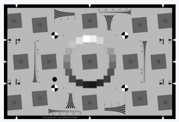 |
包含 20 階的 OECF 灰階漸層，能同時自動化分析解析度、色彩還原、動態範圍及雜訊。提供 4:3 或電影常見的 16:9 擴展比例（Extended）。 |
| ISO12233 2023 Edge SFR | 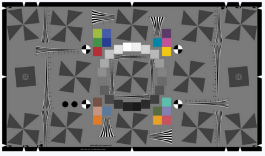 |
包含 20 階的 OECF 灰階漸層，能同時自動化分析解析度、色彩還原、動態範圍及雜訊。提供 4:3 或電影常見的 16:9 擴展比例（Extended）。 |
| Siemens star | 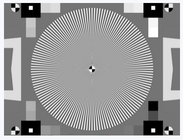 |
西門子星狀圖（Siemens Star Chart），在影視廣播業界也常被稱為後焦測試卡（Back Focus Chart），是一種由多個黑白相間的放射狀楔形條紋組成的圓形測試圖案。它是影像科學中用來精準對焦、校正鏡頭後焦（Flange Focal Distance）以及評估全方位光學解析度的核心工具。 |
| SFRPlus | 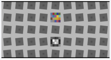 |
SFRplus 測試圖卡（SFRplus Test Chart）是由知名影像評測機構 Imatest 開發的專利高效率測試圖卡。它是專門為了配合 Imatest 軟體進行自動化分析而設計的，能在大規模量產檢測、車載相機、手機鏡頭研發等領域，以單張照片同時量測出解析度（MTF）、畸變（Distortion）、色差（CA）等多項核心光學指標。 |
| 名稱 | 圖片 | 說明 |
|---|---|---|
| colorcheck 24 | 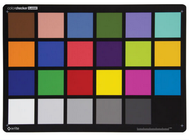 |
ColorChecker 24 色卡（ColorChecker 24 Chart），最廣為人知的歷史名稱為 Macbeth ColorChecker（麥克白色卡），是全球影像、攝影、影視廣播與印刷行業中最權威、最被廣泛應用的標準校色目標。它由 4 行 6 列共 24 個經過嚴格科學配方調製的霧面色塊組成，不論在何種光源照射下，都能反射出與真實自然物體完全相同的光譜響應。 |
| colorcheck 24 nano | 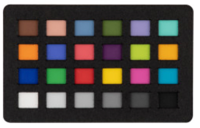 |
ColorChecker Classic Nano 是整個 ColorChecker 系列中尺寸最小的 24 色校色卡。它的物理尺寸僅有 24 x 40 毫米（約 1 x 1.75 英寸），厚度僅 1 毫米。它將業界標準的 24 個科學配方色塊完美等比例縮小，專門為無法容納常規色卡的微距攝影（Macro Photography）、極近距離拍攝與微型工業相機標定而設計。 |
| colorcheck SG | 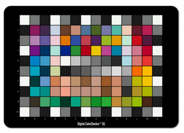 |
ColorChecker Digital SG 色卡（Digital ColorChecker Semi-Gloss）是專為數位攝影、高精度影像翻拍與實驗室色彩管理所設計的進階廣色域專業標定板。與傳統 24 色卡相比，它大幅擴充至 14×10 網格、共 140 個色塊，能提供極寬廣的色域範圍，是目前為數位相機與掃描器建立高品質 ICC 特性配置文件（ICC Profile） 的終極工具。 |
| chroma du monde 28R | 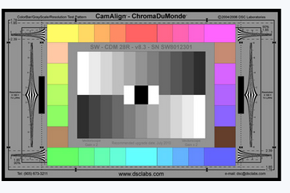 |
ChromaDuMonde 28R（CDM 28R）是由影像測試界權威 DSC Labs 專為廣播電視、電影製作及高端影像實驗室設計的頂級影視色彩校正圖卡（CamAlign Chip Chart）。它是廣播工程師與DIT（數位影像工程師）用來校準相機色彩矩陣（Color Matrix）、伽馬曲線（Gamma），並確保多機拍攝時色彩絕對一致的廣播級行業標準。 |
| Rez Checker Target | 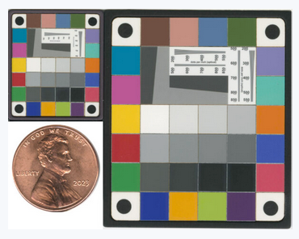 |
Rez Checker Target 測試卡（由 Imatest 官方提供與銷售）是一款專業級、高精度的微型化多功能影像校正圖卡。它專門為了極近距離的微距攝影（Macro Photography）、數位掃描器校對以及醫療內視鏡（Endoscopes）檢測而設計，能以極致微小的實體表面，同時兼顧解析度（MTF）、色彩還原（Color）、色調響應（Tone）與白平衡的多重標定。 |
| 名稱 | 圖片 | 說明 |
|---|---|---|
| 36 patch dynamic range | 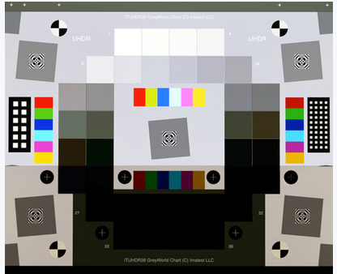 |
傳統測試需要拍攝多張不同曝光量的照片進行合成，而 36-Patch 測試卡的最大價值在於「單張照片、一次拍攝」即可完成完整的動態範圍與階調分析。 |
| contrast rsolution | 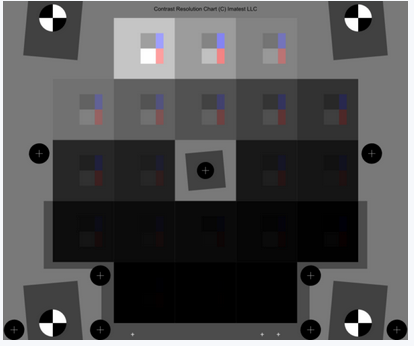 |
Imatest 對比度解析度測試圖卡（Imatest Contrast Resolution Chart），專門用來評估現代相機系統在大亮度範圍內的低對比度物體可見度與高動態範圍（HDR）性能。它在 IEEE P2020 汽車影像標準 會議中被強烈推薦，廣泛應用於車載鏡頭與安防監控領域。 |
| ISO_14524 | 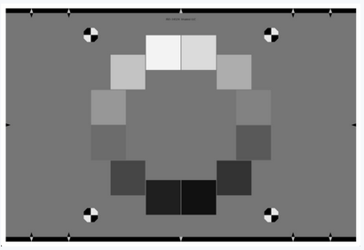 |
ISO 14524 是國際標準化組織（ISO）專門針對數位相機、鏡頭與感光元件所制定的影像品質測試標準，全稱為 《攝影—電子靜態相機—光電轉換函數（OECF, Opto-Electronic Conversion Function） 的量測方法》。它是影像科學中用來評估系統動態範圍（Dynamic Range）、階調響應（Tone Response）與訊噪比（SNR / Noise） 的最核心基石標準。 |
| ISO 15739 digital camera noise | 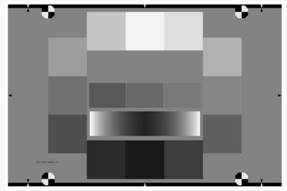 |
ISO 15739 是國際標準化組織（ISO）專門針對數位相機、智慧型手機鏡頭、車載影像傳感器所制定的「噪訊（雜訊）量測與計算方法」權威標準。它與提供灰階輸入源的 ISO 14524 (OECF) 緊密相連，專門用來定量分析影像系統的信噪比（SNR）、視覺噪訊（Visual Noise）以及感光元件的物理動態範圍。 |
| Q-13 |  |
Q-13 測試圖卡（柯達 Kodak Q-13 / 柯達 Tiffen Q-13），正式名稱為 柯達色彩分離導表與灰階階調卡（Kodak Color Separation Guide and Gray Scale），是全球平面攝影、印刷出版、數位古籍典藏、博物館文物翻拍（Digitization）以及影像科學中最經典、最普及的基礎校色工具。 |
| 名稱 | 圖片 | 說明 |
|---|---|---|
| Black&White Imatest Spilled Coins |  |
黑白落幣圖測試卡（Black & White Imatest Spilled Coins Test Chart），常被俗稱為黑白枯葉圖卡（Monochrome Dead Leaves Chart）。它是影像測試權威機構 Imatest 專門為解決智慧型手機與數位相機的「紋理清晰度（Texture Sharpness / Texture Blur）」量測所研發的專利改良型圖卡。 |
| Spilled Coins Cross |  |
Spilled Coins Cross 測試圖卡（Imatest Spilled Coins Cross Test Chart），是 Imatest 對其經典落幣圖（枯葉圖）所做出的重大技術升級版本。它是當前車載相機、高階智慧型手機等影像實驗室中，用來精準量測「紋理清晰度（Texture Sharpness）」與紋理 MTF 的頂級標定板。 |
| 名稱 | 圖片 | 說明 |
|---|---|---|
| 18% Gray chart | 18% 灰度卡（18% Gray Card / 中性灰卡）是攝影、影視製作與影像科學中最不可或缺的核心測光與白平衡基準工具。它是一塊經過嚴格科學光譜調製、表面呈現絕對中性的灰色卡片，能夠將照射在其表面的入射光線，以恰好 18% 的反射率 均勻散射出來。這個 18% 的反射率，在視覺感知上剛好代表了人眼視覺感受中的「正中間灰（Middle Gray）」。 |